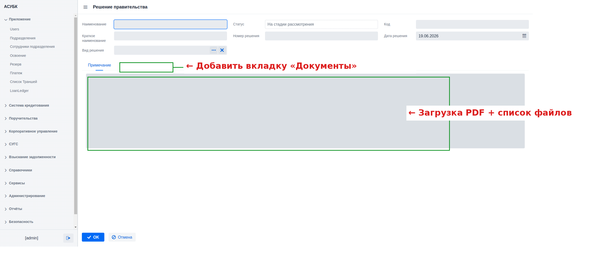
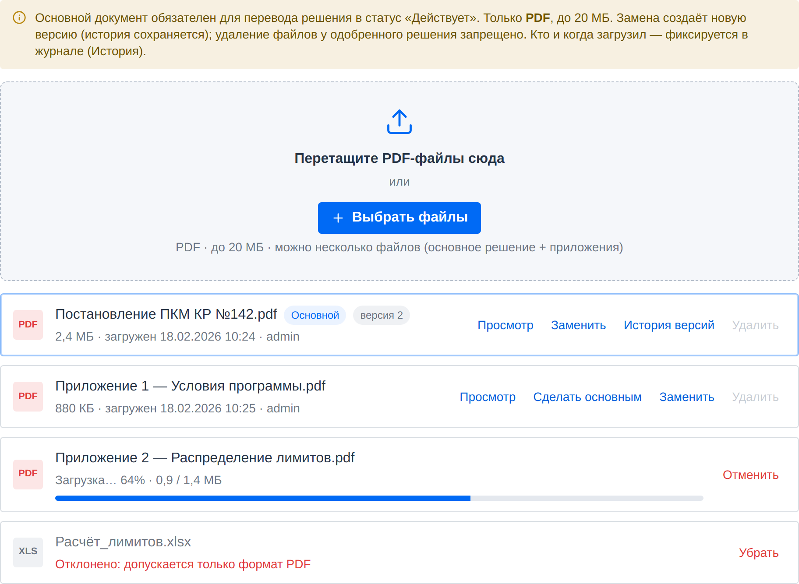

Прикрепление файла решения отдельно от поля «Примечание»
🔴 Высокий приоритетСвязан: дефект «нет поля файла», R2 (аудит), R7 (переход «Действует»)
Документ для согласования · Версия 1.0 · 20.06.2026 · Тестовая среда https://fkftest.okmot.kg/
Содержание
Назначение задачи
Как сейчас (проблема)
Что предлагаем
Правила и поведение
Как это увидит пользователь
Критерии приёмки
Открытые вопросы
1. Назначение задачи
Решение правительства — это юридический акт, на основании которого
открывается кредитная программа. Система учёта и кредитования обязана хранить
не только реквизиты решения, но и сам документ. Сейчас приложить файл
негде — это крупнейший функциональный пробел раздела.
2. Как сейчас (проблема)
Факт (проверено 2026-06-17). В форме создания/редактирования решения
нет поля для файла. Есть только текстовое поле «Примечание», куда
документ не вложить. Реквизиты есть — самого акта в системе нет.

Сейчас: в форме нет вложений. Зелёным — куда добавить вкладку «Документы» и загрузку PDF. Проверено 2026-06-17.
3. Что предлагаем
Добавить загрузку файлов отдельно от «Примечания». Документы хранятся
при записи решения, с версионностью и фиксацией в журнале аудита (R2).
4. Правила и поведение
Параметр
Правило
Формат файла
Только PDF. Другие форматы отклоняются с понятным сообщением.
Размер
Лимит ≈ 10–20 МБ на файл, валидация при загрузке.
Количество
Несколько файлов: основное решение + приложения/изменения.
Основной документ
Ровно один файл помечается как «основной».
На стадии «На рассмотрении»
Файл необязателен.
Переход в «Действует» (бывш. «Одобрен», см. R7)
Наличие основного документа обязательно — без него одобрить нельзя.
Замена файла
Создаётся новая версия с сохранением истории (без перезаписи).
Удаление файла
У одобренного решения удаление файла запрещено.
Аудит
Кто и когда загрузил/заменил файл — фиксируется в журнале (R2).
5. Как это увидит пользователь
1Открыть решение
На странице решения появляется вкладка «Документы»
(см. макет mockups/decision-detail.html, вкладка «Документы»).
2Загрузить файл
Кнопка «Загрузить» → выбрать PDF. Система проверяет
формат и размер; при ошибке — сообщение («Допустим только PDF до 20 МБ»).
3Отметить основной
Один из файлов помечается флажком «основной».
Приложения и изменения загружаются дополнительно.
4Одобрение
При попытке перевести решение в «Действует» без
основного документа система не даёт одобрить и подсказывает приложить файл.
Совет. Замена документа не стирает прежнюю версию — в истории видно, какой
файл действовал на каждую дату.

Как должно выглядеть: вкладка «Документы» — зона загрузки PDF, список вложений с пометкой «Основной», версии («История версий»), «Сделать основным» / «Заменить» / «Удалить», не-PDF отклоняется. Макет mockups/decision-detail.html → вкладка «Документы».
6. Критерии приёмки
В форме/карточке решения есть отдельная зона вложений (вкладка «Документы»).
Принимается только PDF; не-PDF и файлы свыше лимита отклоняются с сообщением.
Можно загрузить несколько файлов; ровно один помечен «основной».
Переход в «Действует» заблокирован без основного документа.
Замена создаёт новую версию; прежние версии доступны в истории.
У одобренного решения файл удалить нельзя.
Загрузка/замена пишется в журнал аудита (кто, когда) — увязано с R2.
7. Открытые вопросы
Точный лимит размера: 10, 15 или 20 МБ?
Нужны ли иные форматы (скан-копии в JPG/PNG) или строго PDF?